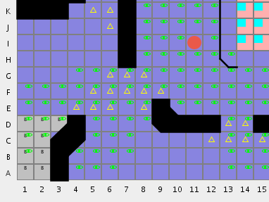

Test release with diagnonal edge support: 20071119-test.
Missed LoS. I know the reasons for this, but not yet the cure (at least not without severely impacting performance). Here are the Lines I know about that are usually missed on the maps with diagonal walls:
Map painting problems: walls are sometimes drawn a pixel or two beyond the map borders.
FIXED 2007-11-19: Incorrect LoS behind thin wall with clipped edge. This screenshot from Hailstorm Tower shows LoS from I11 to H13, which is obviously wrong.
